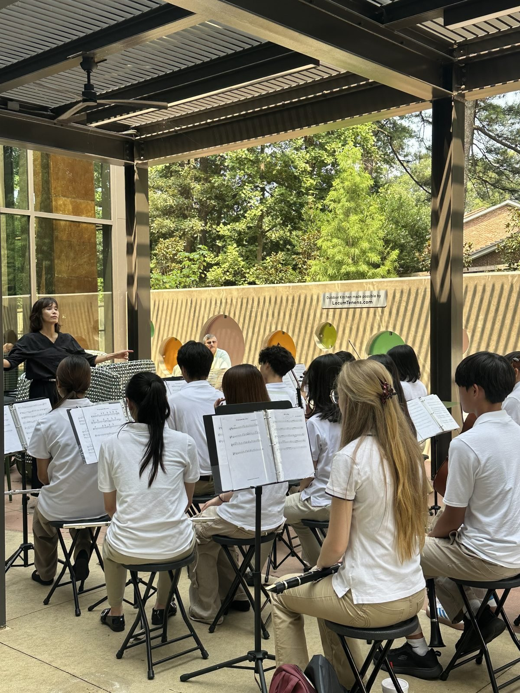
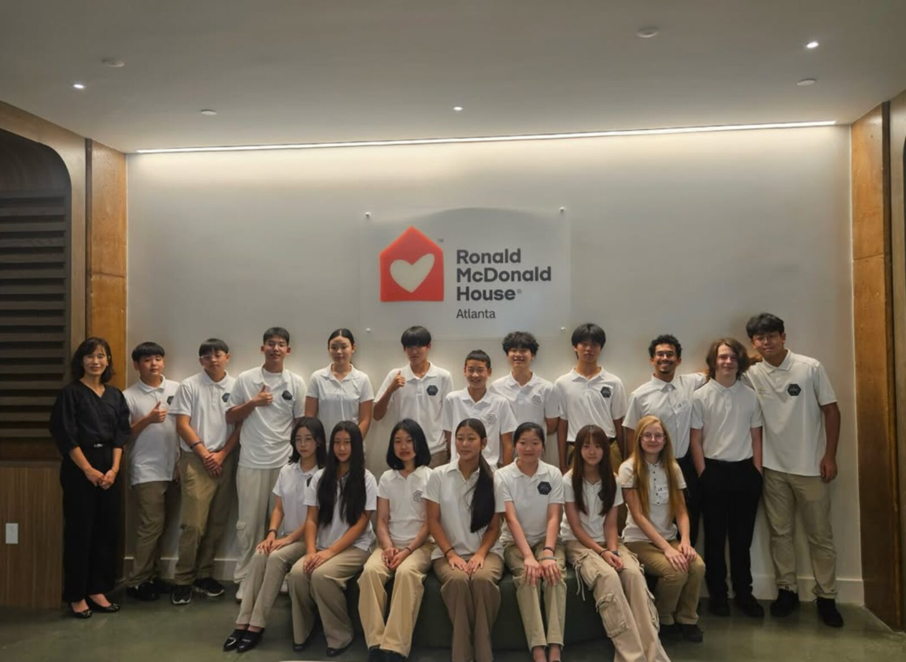

WE ARE WITH YOU
Students using music, learning, and service to support their communities.
WE ARE WITH YOU is the first student-led initiative of GYCO, a 501(c)(3) youth organization in Georgia, suggested by two students, Jueon (Aaron) Kim and Yeoeun (Kate) Kim. Through performances, letters, teaching, videos, and community projects, students create ways to connect with patients, families, older adults, and community partners.
Our work often begins in person — but it is not meant to end when a performance or visit is over. This website helps that connection continue. Whether you met us at an event, received one of our letters, or scanned a QR code from one of our materials, you can return here to watch performances, explore projects, read and send messages, request activities, and connect with the community you are part of.
Even when we are no longer in the same room, our message stays the same:
Even Here. Even Now. WE ARE WITH YOU.
Scan, reconnect, and continue where your visit left off.
On the Wall Where We Visit
This is the poster we leave behind at partner communities. Its five doors — With You, Melody Box, Wish Pocket, Bloom Bank, and the Hope Capsule — are the same ones that open here, in the Community Portal.
If you scanned a QR code from one of these posters, you are already in the right place.
What We Do
Perform
Students bring live and recorded music to hospitals, family houses, and senior communities.
Write
Students and community members share letters and messages of encouragement.
Serve
GYCO organizes service projects with community partners — visits, letters, and care packages.
Recent Work


About GYCO
GYCO — the Greater Youth Collaborative Opus — is a student-centered youth nonprofit founded in 2022 and registered as a 501(c)(3) in May 2023. Students rehearse, perform, teach, and organize their own community projects.
GYCO students have performed at City of Hope Atlanta, Ronald McDonald House Atlanta, and senior communities; written letters and prepared care packages for veterans; served refugee families in partnership with Friends of Refugees; and assembled 100 care packages for people experiencing homelessness in Atlanta.
